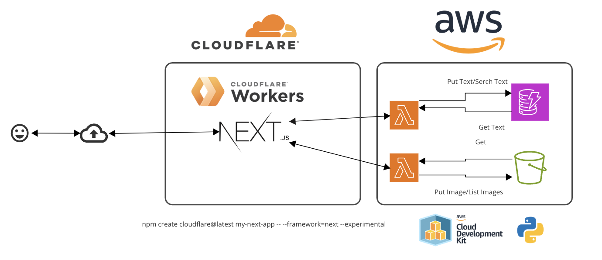
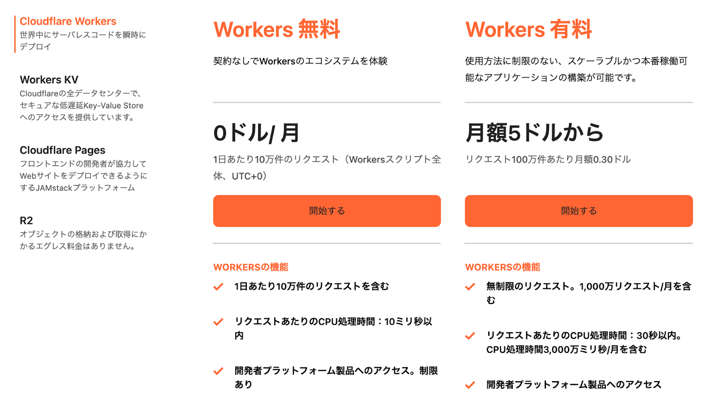
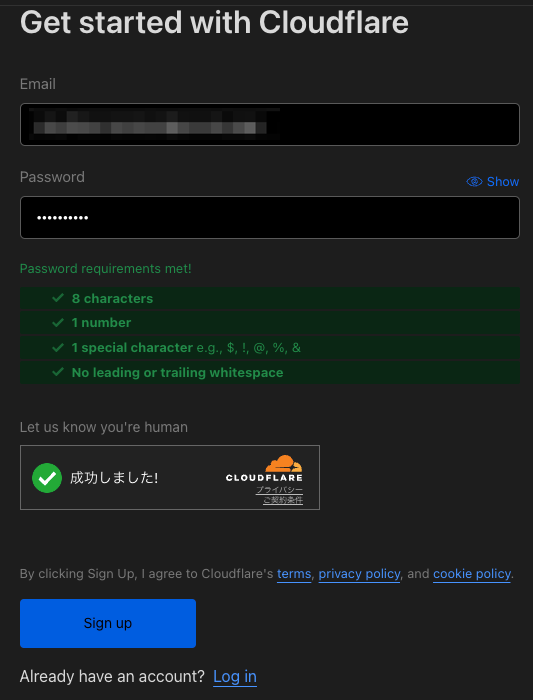
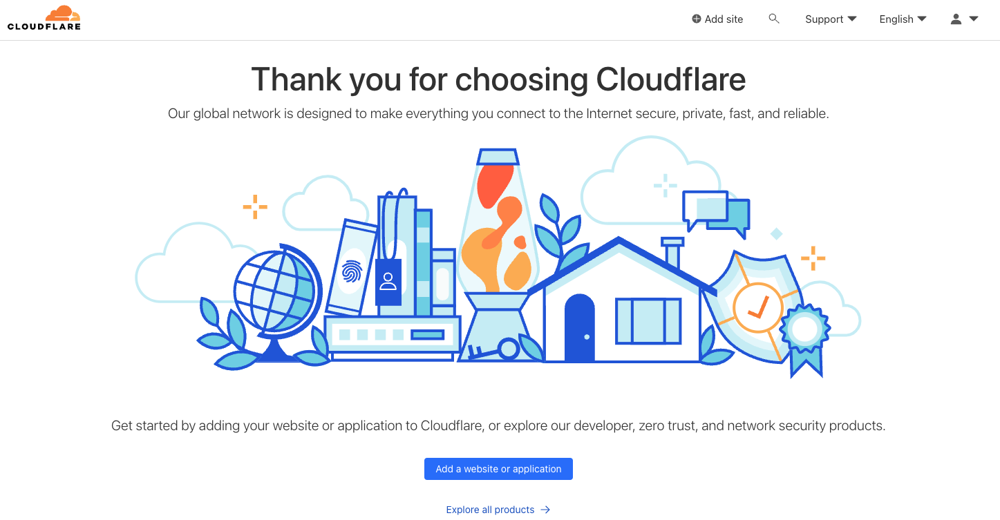
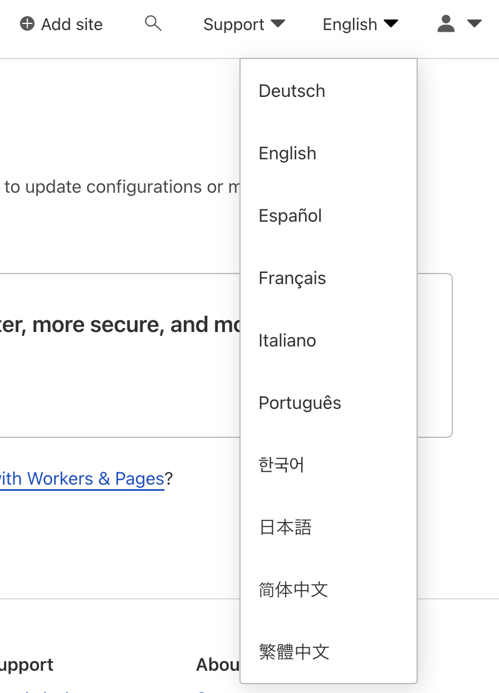
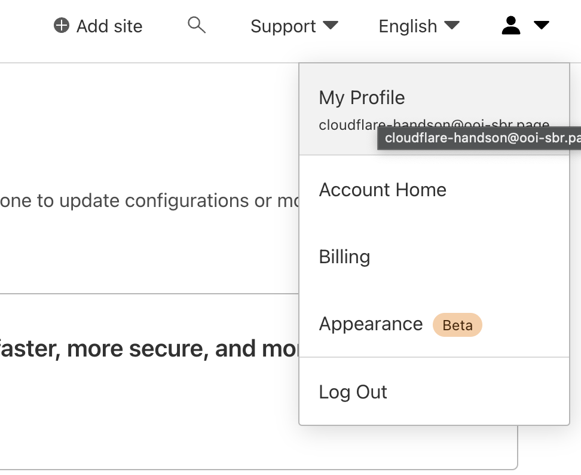
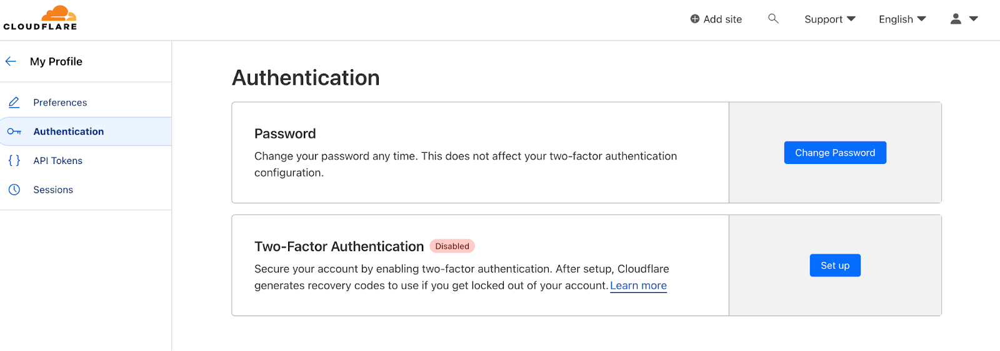
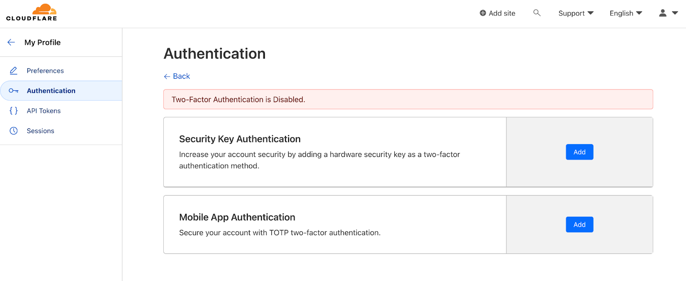

Last Updated: 2024-12-08
インターネットをより速く、安全に、そして信頼性の高いものにするためのサービスです。
Cloudflareのネットワーク上でコードを実行できるサービスで、コードをCloudflareのエッジサーバー上で実行することができます。エッジサーバーとは、世界中に分散配置されたCloudflareのサーバーのことです。

最新の情報はCloudflare公式ページで確認してください。
https://www.cloudflare.com/ja-jp/plans/developer-platform/
AWS（Amazon Web Services）は、Amazonが提供する世界最大級のクラウドサービスプラットフォームです。サーバー、ストレージ、データベース、人工知能、分析ツールなど、幅広い機能を提供し、インターネット経由で必要なリソースをオンデマンドで利用できます。これにより、スケーラブルで柔軟かつコスト効率の良いシステム構築が可能です。
AWS Lambda の無料利用枠には、1 か月あたり 100 万件の無料リクエストと、1 か月あたり 40 万 GB 秒のコンピューティング時間が含まれており、x86 および Graviton2 プロセッサの両方を使用する関数に利用できます。 さらに、無料利用枠には、リクエストごとの最初の 6 MB が無料ですが、それ以外に、1 か月あたり 100 GiB の HTTP レスポンスストリーミングが含まれます。
S3 Standard ストレージクラスで 5 GB の Amazon S3 ストレージ、20,000 GET リクエスト、2,000 PUT、COPY、POST、あるいは LIST リクエスト、データ送信 100 GB を毎月、ご利用いただけます。
25 GB のストレージ、25 のプロビジョニングされた書き込みキャパシティーユニット、25 のプロビジョニングされた読み取りキャパシティーユニット (WCU、RCU) が提供されます。これは、1 か月あたり 2 億のリクエストを処理するのに十分です。
オープンソースの開発フレームワーク - AWS クラウド開発キット
※ CDKの利用は費用が掛かりません
Cloudflareアカウントを作成します。
既にアカウントを所有している場合は本手順をスキップしてください。
メールアドレス、パスワード（ルールに準拠）、Cloudflare Turnstile（Bot対策用チェックボックスサービス）のチェックを通してください。

メールアドレス宛に本人確認を行うURLが送付されているので確認してください。

デフォルトではEnglish（英語）が選択されています。
右上の言語部分を押すとプルダウンリストが表示されるため、任意の言語に変更してください。
本手順書はEnglishでキャプチャを選択しています。

Muilti-Factor Authenticator（MFA：多要素）認証の設定を推奨します。



こちらのページに沿って作成してください。
クレジットカードが必要です。
常用クレジットカードを適用したくない方は、Vプリカも利用できます。
ご利用方法 | Ｖプリカ チャージして繰り返し使えるプリペイドカード
こちらのページからインストールしてください。
バージョンは最新版で大丈夫です。
（参考）
Windows、macOS、LinuxにNode.jsとnpmをインストールする方法
Linux、 macOS、 Windowsに応じてインストール方法が異なります。
（参考）
の最新バージョンへのインストールまたは更新 AWS CLI - AWS Command Line Interface
npmパッケージの一つとして提供されています。
Windows 環境でCloudflare 開発ツール Wranglerを設定する方法とHello World!の実行まで
【超初心者】macOS での Cloudflare Worker 用 wrangler インストール方法 - Qiita
バージョンは、3.10.xにしてください。
（参考）